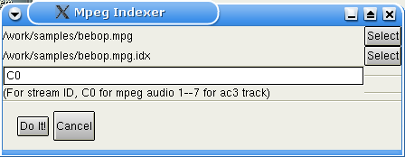
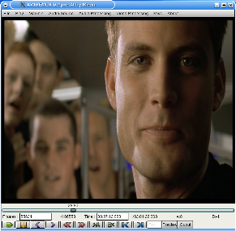
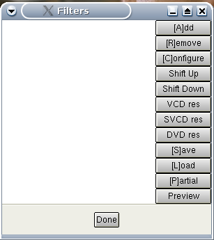
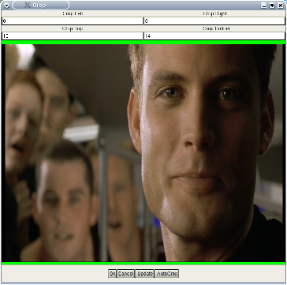
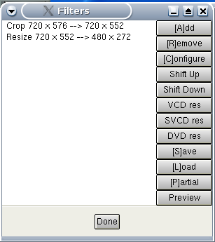
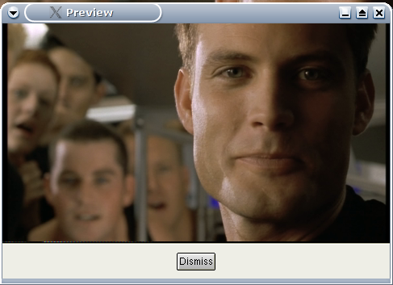
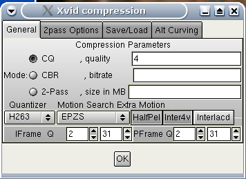
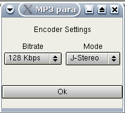
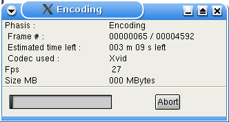

Пример конвертирования Mpeg в Divx
1.Подготовка Здесь описан пример
перекодирования mpeg1 или 2 (DVD например) в AVI, используя xvid
видео кодек и mp3 звук.
Входной
поток
Только mpeg видео (m1v and m2v) и mpeg-ps поддерживаются в
Avidemux (mpg/vob). Поток должен быть с одним angle (точкой обзора),
не шифрованный. Назовем его stream.mpg
Если источник dvd, можно использовать Mplayer : mplayer -dvd 1 -dumpstream. Это создаст читаемый в
avidemux vob из DVD.
VDR файлы пока не поддерживатся.
Индексирование
Avidemux не может читать mpeg поток непосредственно, прежде он
должен прочитать индекс этого mpeg потока.
Индекс mpeg потока это обычный текстовый файл описывающий mpeg и
последовательность кадров. По структуре он схож с d2v из DVD2AVI.
Этот индекс позволяет делать в avidemux случайный поиск с
точностью до кадра.
Чтобы создать индекс, необходимы следующие шаги:
- Выбрать в меню misc->index mpeg
- Открыть mpeg файл, avidemux предложит проиндексировать его
(учтите, вы не сможете открыть файл, это нормально)
Вы
увидите подобное:

С индексами для mpeg все ясно.
С полями id в потоках звука несколько запутанно.
- Если mpeg поток содержит mpeg-audio поток (.mp2), как в VCD :
C0 - первый аудио трек, C1 - второй и т.д.
- Если поток содержит AC3 звук, 0 это первая AC3 дорожка, 1 -
вторая и т.д.
Теперь дождитесь, пока будет просчитан
индекс и откройте созданный индексный файл.
|
Warning: Произвольный поиск иногда
работает некорректно, но с последовательным доступом все
отлично (напр. кодирование) |
|
Warning: Для пользователей TiVo
необходимо увеличить значение переменной MG_CACHE до 70, т.к.
TiVo может использовать очень большой размер
gop | Теперь мы готовы работать с
потоком.
2.Редактирование видео
NSTC vs Film
Некоторые DVD кодированы с fps 23.976 aka FILM (большинство).
Други используют значение 29.97 (NSTC), soap например. В первом
случае DVD проигрыватель конвертирует налету в NSTC format
(telecine). Таким образом, в заголовках mpeg всегда указано
значение 29.96 и это всегда будет конечным форматом.
Avidemux использует mpeg2dec для декодирования mpeg потока (с
небольшими изменениями). Mpeg2dec не выполняет telecine для FILM .
Это означает, что avidemux не может определить разницу между
FILM и NSTC. Если вы заметили все возрастающую рассинхронизацию
видео и звука, используйте Video
Processing->Change framerate и установите значение
23.976.
Для mpeg в PAL проблем нет, они всегда имеют 25 fps.
Cropping
Теперь вы должны иметь что-то подобное : 
Время подобрать фильтры. CTRL+F выдаст список
возможных. 
Мы будем использовать Crop фильтр для удаления черных бордюров.
Если поток качественный, можете попробовать autoCrop кнопку. На примере бордюры очень
небольшие. Они отображаются зеленым для наглядности. 
Resizing
После обрезания, изменим размеры на что-нибудь меньшее.
Не забывайте, что большинство DVD в формате 16/9, имейте это
ввиду при изменении размеров. Откройте снова окно фильтров и
выбирите resize .
Изменим размер до 480x272, помня про 16/9, причем ширина должна
быть кратна 16, а высота 8.
В любое время вы можете изменить настройки фильтра щелкнув
кнопку configure. Для оценки результата
используйте кнопку preview или режим play
с нажатой кнопкой output .
Для информации, наша цепочка видео фильтров выглядит так:
 
Больше
фильтров
В зависимости от исходного материала и поставленной цели вам
могут понадобиться дополнительные фильтры (subtitling, denoiser,
deinterlacer...). Читайте раздел video
filters .
Вы можете открыть окно предпросмотра и "прокручивать" видео в
основном окне бегунком или "горячими" клавишами, предпросмотр так
же будет обновляться.
3.Настройка кодирования
Кодеки
Т.к. мы будем кодировать, нужно выставить режим process для
видео.
Выбраем кодек. Я предпочитаю Xvid и Lavcodec. Вы можете найти
win-tutorial для Xvid, для lavcodec обратитесь к документации на
mplayer.
Divx версия для Linux очень отстает, поэтому не будем говорить
об этом.
Возьмем Xvid для нашего небольшого примера.
Настройка
кодека
Сначала определим файл журнала для второго прохода Video processing->Set log file
Выбор меню Video processing->configure
codec покажет этот диалог. 
Используем 2pass и введем конечный размер . Это рамер чистого
видео без служебных заголоков avi, поэтому делайте 5% запас.
Установим размер равным 600 и нажмем ok.
4.Установки звука
Внутренний
звук
Если используется звук, который был выбран при индексировании,
ничего делать не надо.
Внешний звук
Режим process или нет
?
Если желаете сохранить звук "как есть", например сделать
Xvid+AC3, то ничего не меняйте.
Иначе установите audio в режим process и подключите (например)
Normalize, 48->44. С деталями ознакомтесь здесь audio
filters
Аудио кодеки
Процедура такая-же, как и для видео, выберите кодек, MP3
например, и настройте его
Установим 128 kbps joint stereo, как здесь 
5.Сохранение
Теперь выберите File->Save avi и
ждите.... Готово. Avidemux выполнит первый проход, затем второй и
перекодирует звук. 
|